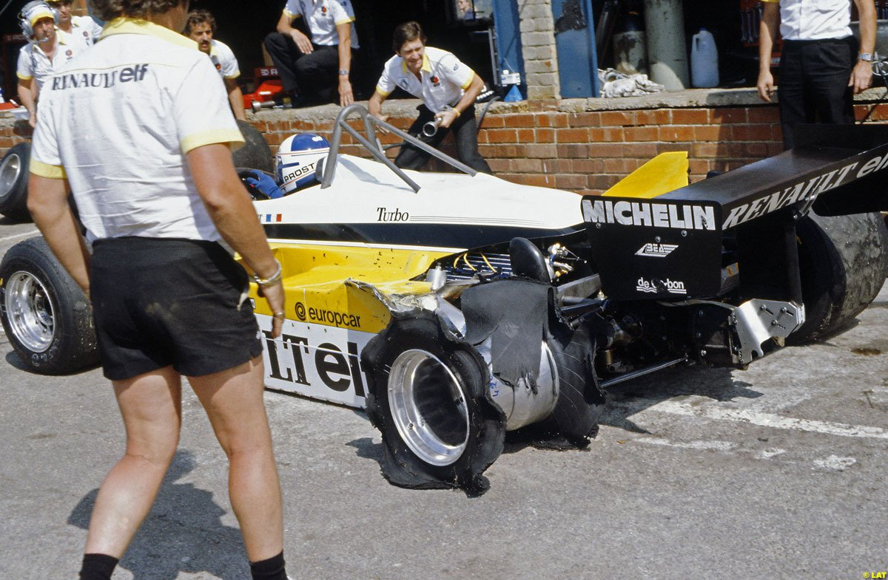
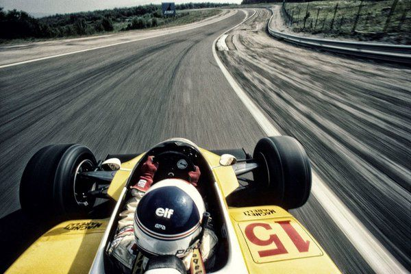

Tercera temporada del francés en la F1. Después de un gratificante '81, con 3 victorias incluidas, 1982 lucía como el año de la definitiva consagración de Alain Prost. El motor turbo desarrollado por Renault seguía evolucionando, y montado sobre el nuevo RE30B, prometía alegrías variopintas.
Un comienzo inmejorable
Primero fue Kyalami, y luego Jacarepaguá. 2 victorias sobre 2 GPs corridos. La primera con mucha mística, ya que promediando la carrera tuvo que parar en boxes a cambiar un neumático reventado. Se recuperó y ganó. La segunda con mucha suerte, debido a la desclasificación de los dos primeros (Piquet y Rosberg). Dos victorias sobre 2 GPs corridos. Inmejorable comienzo.

El año empezó prometedor. Victoria heroica en Sudáfrica.
Desde la tercera fecha, y por 7 carreras, Prost no sumó ni un solo punto. Errores propios y múltiples fallos técnicos hicieron que cayera del primer al quinto lugar. Recién en Francia volvió al podio, en una polémica carrera en la cual Arnoux no quiso ceder la victoria (a pesar del pedido del equipo) y dejó a Prost en el 2º lugar.
A partir de allí comenzaron una sucesión de altibajos desquiciantes. Llegó un podio más, sí, pero en un mar de abandonos y caídas de performance en carrera (por más fallos técnicos) que resultaron en la frustrante paradoja de ser el más rápido pero sin posibilidades de pelear por el cetro.

Dijon. Casi victoria..., pero una vez más el RE30B dijo basta.
Prost terminó el mundial en 4º lugar, a 10 puntos de Rosberg. Sin más victorias que aquellas 2 del principio de temporada. Ahora bien, si Prost no se hubiera pegado a 2 vueltas del final del GP de Mónaco, y si su auto no lo hubiese dejado a pata cuando ganaba en Austria, a 5 vueltas de la bandera a cuadros, por citar dos carreras en que claramente estaba ganando con comodidad, Prost hubiera sido el campeón de 1982. De hecho, la única victoria de Rosberg, en el GP de Suiza, fue gracias a que el auto de Prost se derrumbó en las últimas vueltas, permitiéndole al bueno de Keke pasar a la punta faltando tan sólo 2 vueltas.
Fue un año frustrante para Alain Prost. Lo bueno es que estaba en plena curva de aprendizaje. Su tiempo aún no había llegado, faltaban un par de años más.